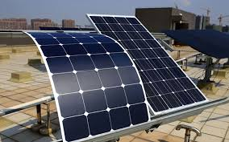
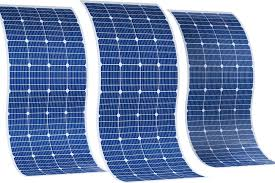
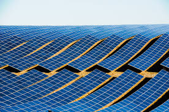

Lightweight • Flexible • Performs in Low Light



Thin-film solar panels are lightweight and flexible, suitable for curved and portable installations.A Thin Film Solar Panel is a type of photovoltaic panel made by depositing very thin layers of solar material onto a surface like glass, plastic, or metal. Unlike traditional crystalline panels, these are lightweight and flexible.